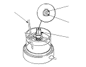
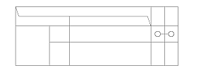

Radiator Fan Switch Test
NOTE:
Bleed air from the cooling system after installing the radiator fan switch.
Remove the radiator fan switch from the radiator.
Suspend the radiator fan switch (A) in a container of water as shown.
Heat the water, and check the temperature with a thermometer. Do not let the thermometer (B) touch the bottom of the hot container.

Measure the continuity between terminal No.1 and terminal No.2 according to the table.
